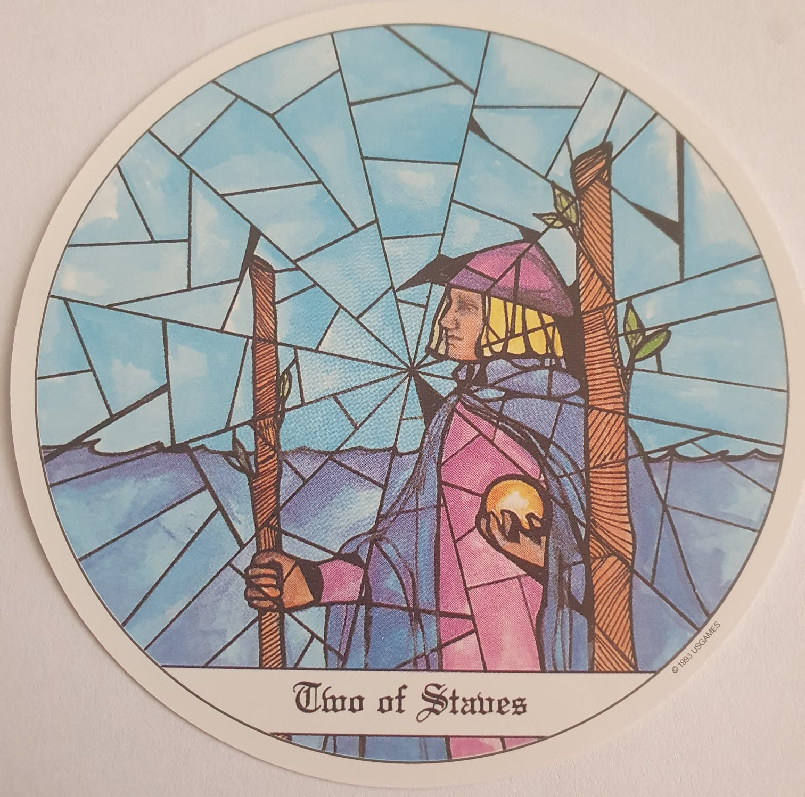

Descubre el mensaje que el tarot tiene para ti hoy. 🌊
El Dos de Bastos simboliza decisiones importantes y la necesidad de planificar el futuro. Hoy es un día para visualizar tus metas y confiar en tu potencial.
Es momento de tomar control y definir qué dirección quieres seguir. La claridad llegará si mantienes una visión amplia.
Se presenta una encrucijada. Confía en tu instinto y elige el camino que resuene más contigo.
Las decisiones de hoy influenciarán en el futuro cercano. Haz planes concretos y prepárate para la acción.
Es un día para tomar decisiones importantes en tu relación. Evalúa hacia dónde quieres dirigir tu energía amorosa.
Tu visión de futuro puede abrir nuevas oportunidades laborales. Mantén el enfoque en tus objetivos principales.
Invierte en proyectos que tengan potencial de crecimiento a largo plazo. Evita decisiones impulsivas.
Planifica rutinas saludables y establece hábitos sostenibles para tu bienestar.